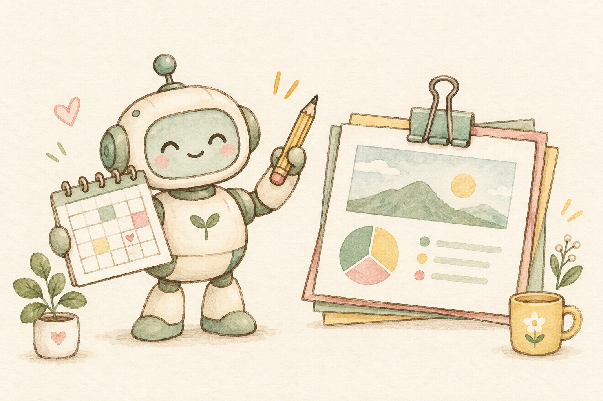
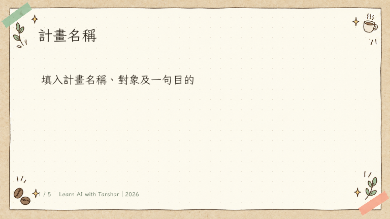
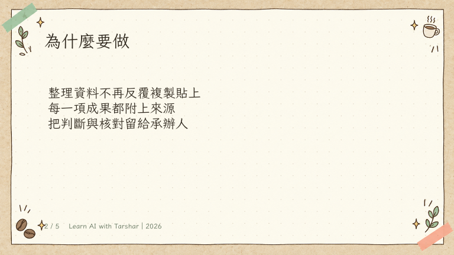

一起上車
把文件裡的期限
放進 Google 日曆
用一份資料＋一份母版
生成五頁 PPTX
一人操作，一人核對；下一段交換。
一起上車
18 分鐘
37 分鐘
10 分鐘
40 分鐘
15 分鐘
87 分鐘留給實作與驗收。卡住先求救，不讓同仁一直等。
一起上車
今天用虛構資料；正式上班再換成單位允許使用的資料。
行前準備
先核對目前登入的帳號。
若尚未開放，與已能使用的同仁同組，輪流操作。
畫面名稱可能隨版本不同；此頁是操作路線，不是產品截圖。
行前準備
我今天用的日曆：＿＿＿
我的事件前綴：
【AI練習】
不用邀請同事，不建立重複事件。
Spark 行事曆
先做一筆小的，
確認整條路真的通。

2026／10／06
上午 9:00–9:30
AI 提供預覽 → 你核對 → 才建立
Spark 行事曆
請在我的 Google 日曆建立一筆測試事件：2026 年 10 月 6 日上午 9:00 到 9:30，時區台北，標題【AI練習】工作計畫確認，不邀請其他人。先列出你要寫入的日曆、標題與時間，等我確認再建立。
送出後先看帳號、日曆和時間；確認正確才回「確認建立」。
Spark 行事曆
① 日曆帳號對不對？
② 左邊那本日曆有沒有勾選？
③ AI 是給了草稿，還是真的建立？
Spark 行事曆
三筆到期事件
每筆提前 7 天通知。
不能算日期的那筆，先留下來問。
讀文件 → 對日期 → 建事件 → 打開日曆查。
Spark 行事曆
請讀取我上傳的「虛構契約節錄」，整理交付事項、原文依據、固定或相對期限、到期日、提前 7 個日曆日的日期。缺少起算日的項目標示待確認，不自行猜日期。這一步先給我看表格，不建立事件。
Spark 行事曆
| 交付事項 | 到期日 | 提前七天 |
|---|---|---|
| 工作計畫 | 2026/10/06 | 2026/09/29 |
| 期中成果 | 2026/11/12 | 2026/11/05 |
| 期末成果 | 2026/12/18 | 2026/12/11 |
| 收到意見後 10 日 | 沒有收到日期 → 待確認 | |
AI 若填出第四筆固定日期，先問它：「你的起算日從哪裡來？」
Spark 行事曆
表格已確認。請在我指定的 Google 日曆建立三筆固定到期日的全天事件：2026/10/06、2026/11/12、2026/12/18，分別對應工作計畫、期中成果、期末成果；標題加【AI練習】。每筆設定提前 7 個日曆日通知，時區台北。描述放入原文依據。不邀請其他人、不設重複、不建立缺起算日的第四項。先檢查是否已有相同事件，避免重複；若無法設定通知，明確告訴我，不要宣稱完成。
這次建立的是「到期日事件＋提前通知」，不是把到期日改成七天前。
Spark 行事曆
□ 三筆日期都正確
□ 標題找得到【AI練習】
□ 提前七天通知有設定
□ 沒有重複、沒有邀請別人
左邊是核對示意；你的成品要在自己的 Google 日曆裡。
Spark 行事曆
請只調整【AI練習】工作計畫那一筆全天到期事件：標題改成【AI練習】工作計畫交付，日期保留 2026/10/06。其他事件與提醒設定保持原狀。先列出你找到的事件和修改內容，再等我確認。
改完再搜尋一次：標題改了、日期還在、沒有新增重複事件。
Spark 行事曆
「這是我排好的提醒。」
請同仁挑一筆，
拿 PDF 對日期與提醒。
Spark 行事曆
| 卡在哪裡 | 現在做什麼 |
|---|---|
| 沒有 Spark | 與已可用同仁同組，輪流完成同一個流程。 |
| 只有表格，沒有事件 | 確認 Workspace 連線與日曆寫入結果。 |
| 不能設定提前通知 | 先保留到期事件；改列「提前七天提醒事件」草稿，確認後再建立。 |
| 日期不對 | 說出唯一要改的事件、正確日期與保留項目。 |
補救提示在課程頁的提示庫；人工手動登錄僅為備援，不算完成 Spark 串接。
中場休息
下一站：把資料放進母版，
做出一份文字能改的簡報。
母版套簡報

五頁母版・紙張底・固定標題與頁尾
母版套簡報
母版不是一張截圖；要放真正的 PPTX 檔案。
母版套簡報
我上傳了「practice-master.pptx」與「practice-plan.pdf」。請先檢視 PPTX 的五頁版型、標題位置、字體、色彩與頁尾，再列出每頁用途。先不要生成新簡報；如果無法讀取母版或無法保留版型，先說明，不另做一套風格。
先讀它的回答：有沒有真的認出五頁結構？不要一開始就叫它自由設計。
母版套簡報
只依「practice-plan.pdf」的內容，安排五頁：計畫名稱、目的、對象、辦理方式、成果與限制。每頁最多三個重點，附上來源段落；原文沒有的寫待確認。請先給逐頁大綱，暫時不要產生簡報。
母版套簡報
大綱確認了。請使用上傳的 practice-master.pptx 當作實際版型基底，把確認後的內容填入對應頁面，保留紙張背景、標題與正文位置、字體色彩、頁尾及 16:9 比例。輸出一份新的 PPTX，標題和正文都必須可編輯，不把整頁變成圖片，不覆寫母版。如果無法保留版型，先告訴我哪部分做不到。完成後提供可下載的檔案。
重點是「使用上傳母版當基底」，不是只說「做得漂亮一點」。
母版套簡報
① 紙張背景與色彩
② 標題、正文位置
③ 字體與字級
④ 頁尾與頁數
① 對象有沒有變？
② 未提供資料有沒有亂補？
③ 每頁有沒有重點？
④ 有沒有漏掉限制？
版型對、內容也對，才算套版完成。
母版套簡報

套版示例・正文保留可編輯文字
母版套簡報
那還不是可編輯簡報。
回 AI 說：「標題與正文請改成文字方塊，背景才用圖片。」
不要只看 AI 的預覽圖；用 PowerPoint 或可編輯簡報軟體打開檔案。
母版套簡報
請只修改第 3 頁：標題改成「誰適合參加？」；正文保留三點，每點不超過 18 個中文字，內容只能來自原計畫。保留字體、色彩、背景、位置與頁尾。其他頁不變，輸出新的 PPTX。
新檔打開後，對照第 2、4 頁：不需要改的地方，有沒有被動到？
母版套簡報
□ 真的沿用母版
□ 共五頁，內容有來源
□ 標題與正文能編輯
□ 至少完成一次局部修改
母版套簡報
| 看到的問題 | 這樣回給 AI |
|---|---|
| 母版被換掉 | 「保留上傳母版的背景、字體和位置；只替換內容。」 |
| 內容塞太滿 | 「第 4 頁只留三點，每點 18 字以內；不要縮小字。」 |
| 只給逐頁文字 | 「請產出可下載 PPTX；若目前模式不支援，明確說明。」 |
| 中文字或版面跑掉 | 「使用可用的繁中文字體重新輸出，保留原尺寸和位置。」 |
延伸操作
請讀取「practice-source.txt」的丙段，以列管編號彙整到主表欄位：編號、事項、各組原文、摘要、狀態、待確認、來源。A01 有相反回覆時並列標示待確認；A02 缺完成日期就保留未提供。請輸出可下載的試算表，不改動原始資料。
下載跨組回覆素材 ↓ 做得快的組別，完成後試著存成可重複使用的步驟。
帶回工作
履約期限
會議交辦日
活動前置作業
計畫介紹
成果報告
課程或會議分享
先成功一次，再把步驟留下來，下次直接接著做。
成果驗收
□ 我的 Google 日曆裡，有查得對的事件與提醒。
□ 我的簡報套進母版，文字可以改。
□ 我知道出了問題，要怎麼請 AI 修正。